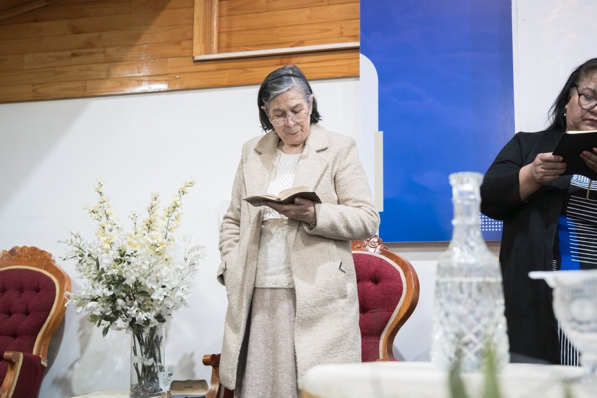

Dorcas
Hermanas adultas que por años han sido un pilar espiritual: oración, servicio y compromiso con la obra del Señor, sosteniendo la construcción y hermoseamiento del templo.
Iglesia Metodista Pentecostal de Chile
Libertad y Adoración
Un espacio de fe, restauración y esperanza en el corazón de Puerto Montt, donde creemos que el Señor sigue transformando vidas.
Somos una iglesia cristiana ubicada en Pichi Pelluco, Puerto Montt, que abre sus puertas a toda persona que desee acercarse a Dios. Aquí encontrarás un espacio de fe, restauración y esperanza, donde creemos que el Señor sigue transformando vidas.

“Levantado con sacrificio, oración y esperanza.”
La Iglesia Metodista Pentecostal de Chile Pichi Pelluco nace hace más de 50 años en el corazón de hermanos que, guiados por la fe y liderados por quien fuera nuestro pastor Orlando Rodríguez, junto a Otilia Ortega, soñaron con tener un lugar donde reunirse para alabar y bendecir el nombre de Dios.
En sus primeros años, la congregación se reunió en una carbonera y en casas particulares. Eran tiempos sencillos, marcados por la pobreza, el esfuerzo y la profunda convicción de que Dios estaba con su pueblo.
Con fe y trabajo comunitario, los hermanos comenzaron a levantar el templo. Cada uno aportó según sus fuerzas —incluso comprando un metro cuadrado— en medio de una población que recién comenzaba a formarse. No había casas ni negocios alrededor; sólo el deseo sincero de construir un espacio consagrado a Dios.
Hoy, la Iglesia de Pichi Pelluco sigue siendo un lugar de encuentro, adoración y servicio, manteniendo viva la fe de quienes creyeron que Dios podía hacer grandes cosas en este lugar.
Somos una iglesia cálida, abierta a toda persona que llegue con un corazón dispuesto para buscar, alabar y adorar a Dios. Creemos que la iglesia debe ser un lugar de refugio, restauración y esperanza; un hospital para el alma en medio del cansancio, las cargas y el ajetreo diario.
En Pichi Pelluco, nadie necesita aparentar para acercarse a Dios. Recibimos a cada persona con amor, sin importar su condición, historia o vestimenta, confiando en que el Señor sigue transformando vidas por medio de su presencia, su Palabra y el poder del Espíritu Santo.
Nuestra consigna es simple y profunda:
Libertad y Adoración.
Reuniones de adoración, estudio y comunión durante toda la semana.
Cada ministerio es una forma de servir a Dios y a la congregación.
Hermanas adultas que por años han sido un pilar espiritual: oración, servicio y compromiso con la obra del Señor, sosteniendo la construcción y hermoseamiento del templo.
Cumplen una labor fundamental, muchas veces silenciosa, aportando en lo espiritual y lo material para que la iglesia cuente con espacios adecuados para reunirse.
Jóvenes solteros entre los 13 y 30 años. Un espacio clave de formación espiritual para hombres y mujeres firmes en la fe y cimentados en la Palabra.
Sello característico de la iglesia. Acompaña la adoración con instrumentos tradicionales y modernos, guiando a la congregación en la alabanza.
Centrada en el estudio profundo de la Palabra de Dios, fomentando un aprendizaje dinámico, participativo y guiado por el Espíritu Santo.
Llevamos el mensaje de Jesucristo a la comunidad a través de la predicación y el testimonio, una tarea siempre fundamental.
Muchos hermanos entregan su tiempo y esfuerzo de manera voluntaria en distintas áreas: un servicio muchas veces invisible, pero profundamente valioso.
Momentos de adoración, comunión y servicio que dan testimonio de la obra de Dios en Pichi Pelluco.




Creemos que la Biblia es la Palabra de Dios, inspirada por el Espíritu Santo, y la única autoridad para guiar nuestra fe y conducta.
Creemos en un solo Dios verdadero, eterno y todopoderoso, manifestado en Padre, Hijo y Espíritu Santo.
Creemos que Jesucristo es el Hijo de Dios, quien murió por nuestros pecados y resucitó para darnos vida eterna.
Creemos en la obra del Espíritu Santo, quien guía, fortalece y transforma la vida del creyente.
Creemos que la salvación es por gracia, mediante la fe en Jesucristo.
Creemos en una vida de santidad, obediencia y compromiso con Dios.
Creemos en el bautismo como expresión de fe.
Creemos que la iglesia es el cuerpo de Cristo, llamada a predicar el evangelio y servir.
Creemos en la segunda venida de Jesucristo.
Estamos preparando una sección con himnarios digitalizados, con opción de hojear como revista, buscar himnos y reproducir melodías en formato MIDI. ¡Muy pronto disponible!
No necesitas aparentar para acercarte a Dios. Ven tal como eres.